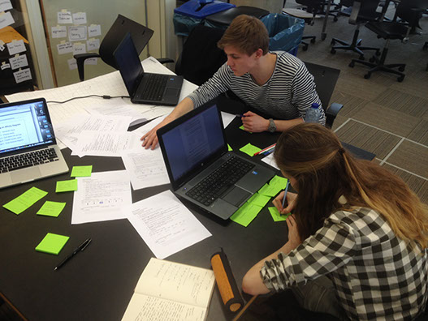

........................................................................................................................................
![when undertaking the Creative Programming assignment, I knew I was going to be challenged. Id never look at Processing before, and my Arduino skills were still at a very basic level. As the weeks progressed I realised that many of the simple commands of code had great potential in achieving amazing results. From creating Arrays, using integers, floats and many more commands, I began to realise that what seemed impossible began to make sense, and before I knew it I was able to create dynamic sketches that were interactive and interesting. By following the links you will be directed to my reflections, as well as some sketches that were created during an interactive poster project. Challenge 2. During the first quartile, I was undertaking the Design for the User Experience assignment. We discussed many types of methodologies that can be used when conducting a user experience test, such as diary studies, cultural probes and contextual inquires, but what was evident in our progress through the quartile was understanding which method was most appropriate to the study. In our group we had many trials and errors when undergoing our assignment, but this allowed us to experiment into the way in which we could apply various methods to a similar product or service, and understand why certain approaches wouldn't work. Collecting and analysing the data was the next step, which required a range of different methods in order to process and interpret the results. By following the links to our report you will be able to see the week by week progress, as well as the progress of our final study.](images/u1658-115.png)
........................................................................................................................................